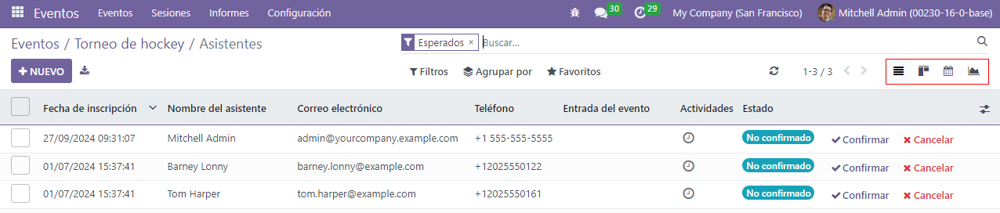
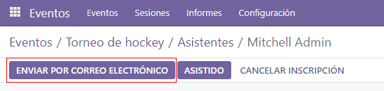
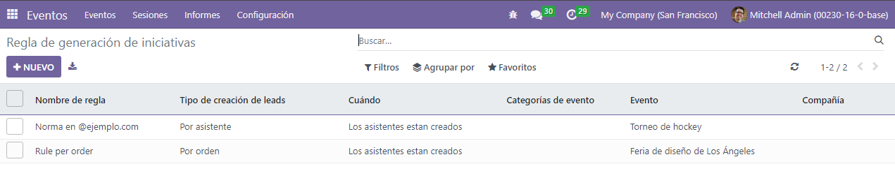
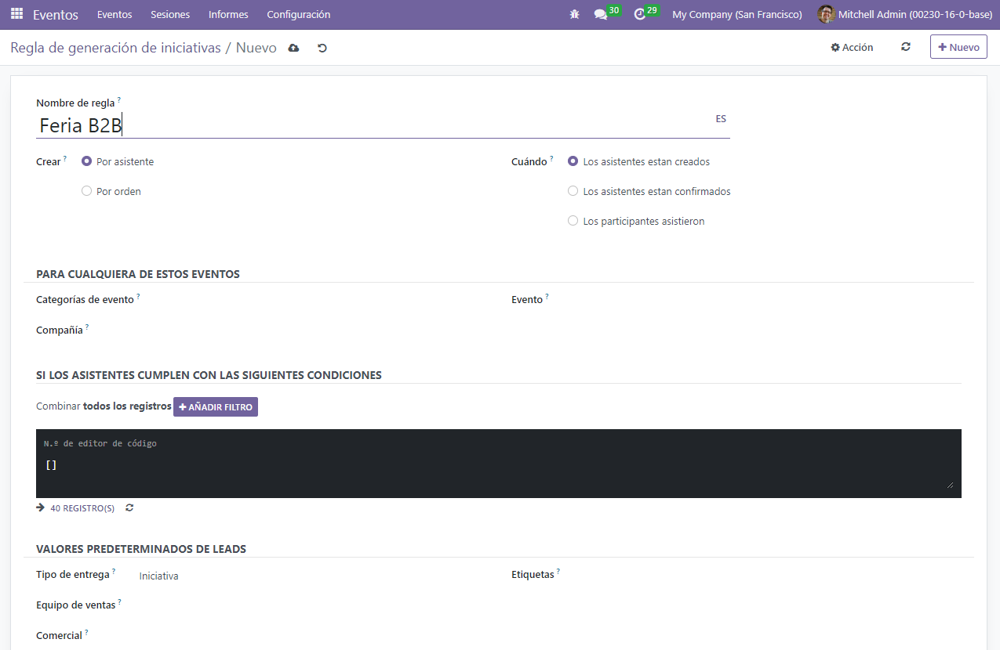

Track and manage talks¶
With Odoo Events, it’s possible to provide attendees with the power to propose presenters to speak at events.
Configuration¶
First, go to and enable Schedule & Tracks.
When that feature is enabled, two more options become available: Live Broadcast and Event Gamification.
Live Broadcast allows for the airing of tracks online through a YouTube integration.
Event Gamification allows for the sharing of a quiz with your attendees, once a track (talk) is over.
Tip
Event Gamification isn’t necessary for tracks to appear on the event page on the website, but it can enhance the engagement and overall enjoyablity of the event for attendees.
Talks, talk proposals, and agenda¶
Once those two features are enabled, the following links are automatically added to the sub-header menu, located on the event page on the website: Talks, Talk Proposals, and Agenda. Any attendee can freely access these menu items and their corresponding content.
The Talks link takes the attendee to a page full of all the talks for that event.
The Talks Proposals link takes the attendee to a form page, where they can propose talks for the event.
The Agenda link takes the attendee to a page with all the talks for the event, but in a calendar/time-slot format.

Manage talk proposals¶
When attendees fill out and submit a talk proposal form on the website, a new Proposal is instantly created in the back end for the event.
Note
All talks (Proposals, Confirmed, Announced, etc.) are accessible via the Tracks smart button on the event form.
If a proposal is accepted, move the Event Track to the appropriate stage in the Kanban
view (e.g. Confirmed, etc.). Then, go to that particular event’s template form, and click the
Go to Website smart button to reach that specific talk’s page on the website.
In the upper right corner, toggle the switch from Unpublished to Published, and the talk is instantly accessible on the website.
Note
Without publishing a talk, attendees will never be able to access it.
Attendees list and attendance¶
Once attendees have registered for a specific event, they are added to the Attendee List for that event, which is accessible via the Attendees smart button on the event template form, or and sorted by event.
Note
When an attendee arrives at the event, they will be marked as attending (Confirmed Attendance), and the status of that attendee will change to Attended.
When analyzing an Attendees list, Odoo provides different ways to view the information. Each view option presents the same information, but in a slightly different layout. To change the view, click on the icons in the upper right hand of the screen.
In the Kanban view, it can be confirmed whether the attendees have already paid or remain unpaid.
The List view provides information in a more traditional list formation.
The Calendar view provides a clear schedule visualization of which attendees are arriving on specific dates of the event.
The Graph view provides graphical representations of that event’s attendees, along with numerous filters and customizable measures for deeper analysis.
The Cohort view lays out attendee data to better analyze the number of registration dates.
Note
Tickets sold through sales orders validate attendees as soon as the quotation is confirmed.
Manage registrations¶
Upon selecting an attendee, Odoo reveals that specific attendee’s detail form.
From here, event badges can be sent manually, by selecting Send By Email. The Attendee can also be marked as Attended, or the registration can be canceled altogether via the Cancel Registration button.
Lead Generation Rules¶
With Odoo, leads can be generated from events.
To create and configure a Lead Generation Rule related to events, navigate to .
On the Lead Generation Rule page, every configured Lead Generation Rule can be found, along with pertinent data related to those rules.
To create a new Lead Generation Rule, click Create, and fill out the Lead Generation Rule form.
After naming the rule, configure how the lead should be created (either Per Attendee or Per Order), and when they should be created, (when Attendees are created, when Attendees are confirmed, or when Attendees attended the event).
In the For any of these Events section, there are fields to attach this rule to any specific event categories, company, and/or event. To add even more specificity to the rule, a domain filter rule can be configured to ensure the rule only applies to a specific target audience of attendees (found in the If the Attendees meet these Conditions section).
Lastly, in the Lead Default Values section, designate a Lead Type, then assign it to a specific Sales Team (and/or Salesperson), and attach tags to the rule, if necessary.